Татуаж и перманентный макияж губ в Ростове-на-Дону
Акварель или помада. Подбираю цвет под вашу кожу, чтобы губы выглядели свежо и естественно без помады
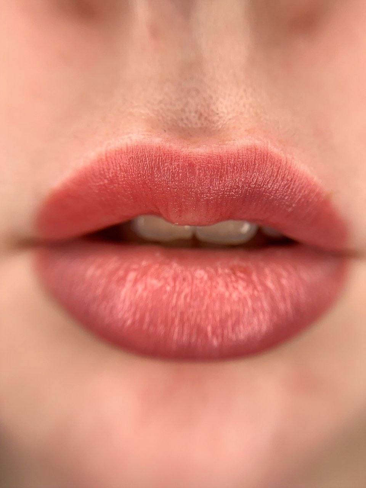
Акварель или помада
Акварель
Лёгкий естественный оттенок. Губы как свои, только свежее и с ровным контуром
Помада
Более насыщенный цвет, как от помады. Для тех, кто любит выразительные губы
Цвет подбираю под вашу кожу и сначала проверяю его. Вы видите оттенок до того, как мы начнём
Как заживают губы
Сразу после губы яркие и насыщенные, на 3-7 день шелушатся и кажутся бледнее, а через месяц цвет проявляется мягким и естественным
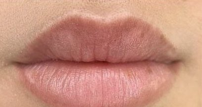
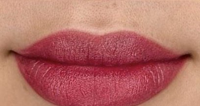
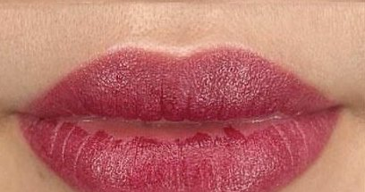
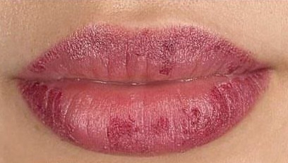
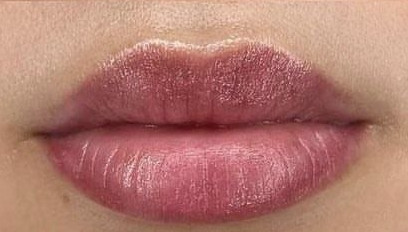
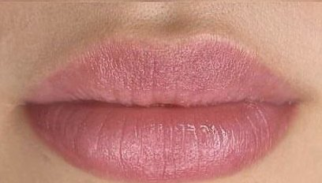
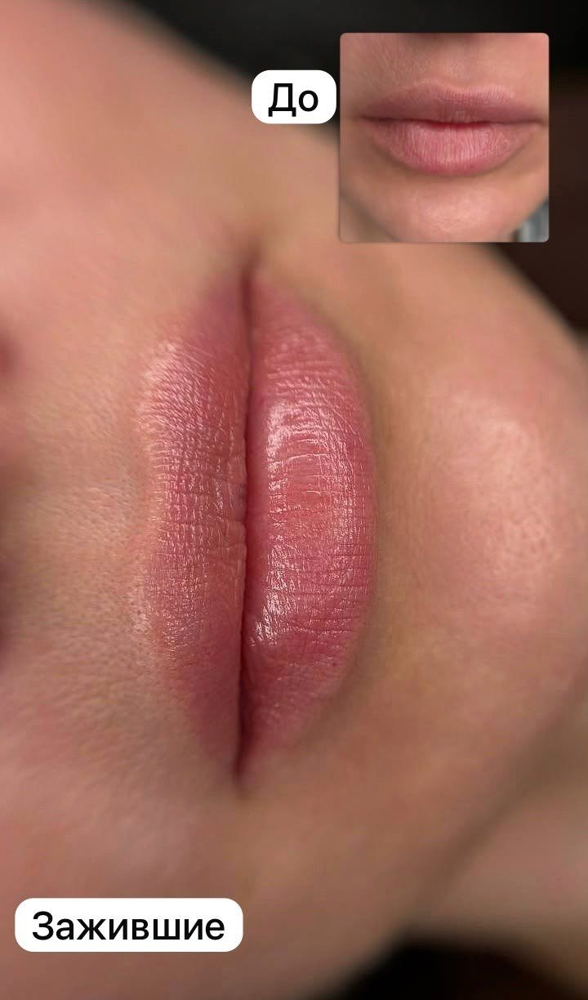
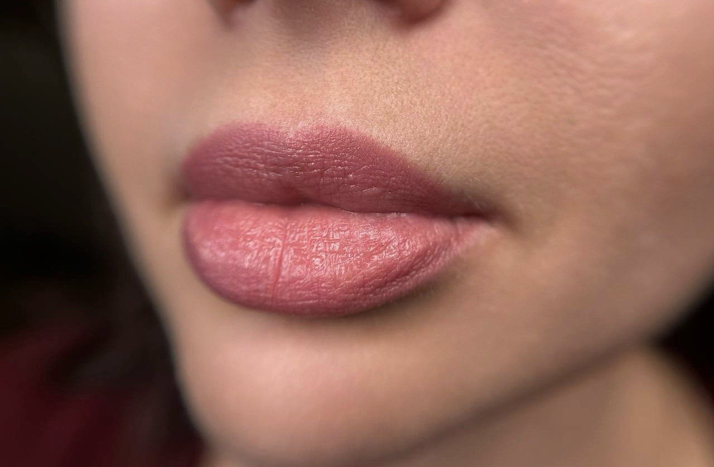
Губы после рубца
Клиентка пришла с рубцом на верхней губе. Мы закрасили рубец под цвет губ и выровняли форму. Сдвиньте ползунок, чтобы сравнить
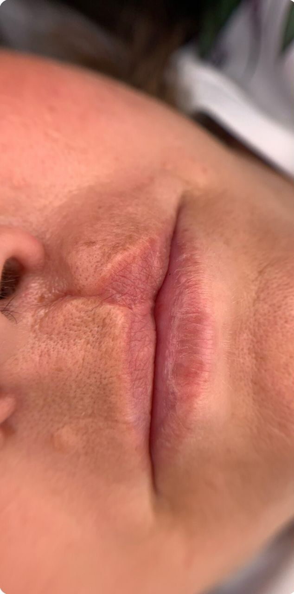
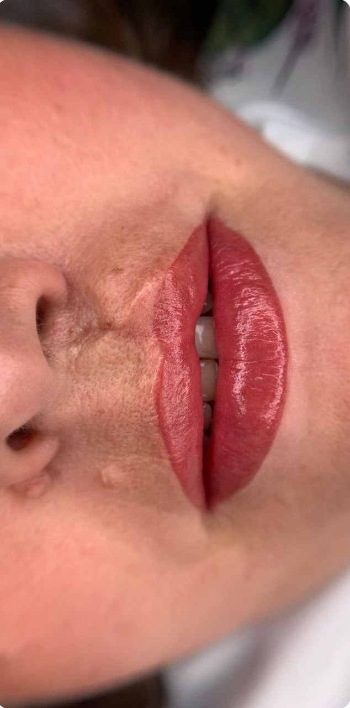
ДоСразу послеМои работы
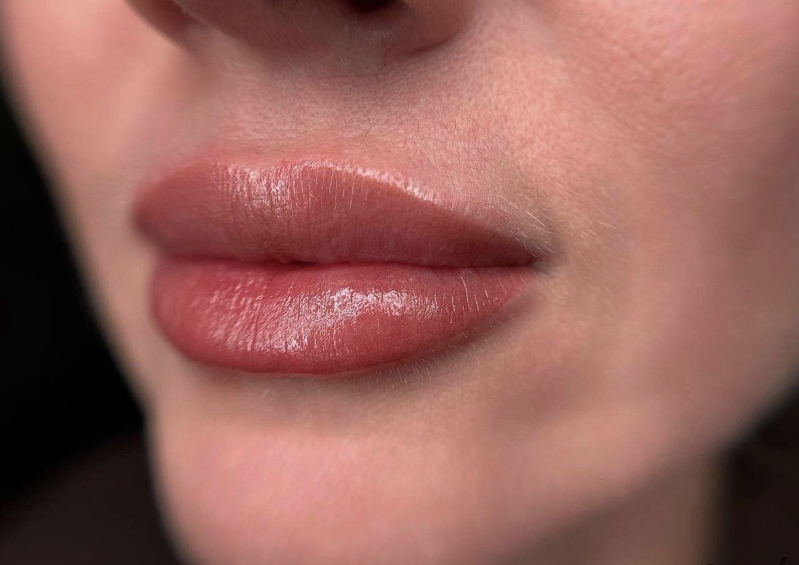
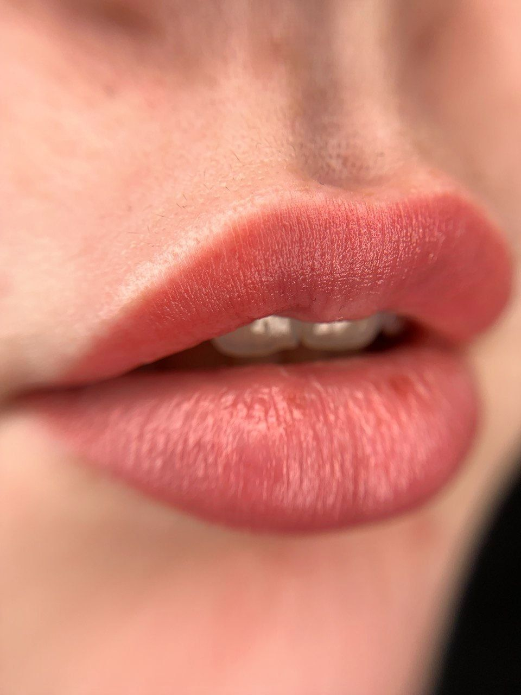
Цена по этапам
Губы
Коррекция стоит дешевле, если прийти в течение 2 месяцев. Позже она стоит как первичная процедура. Я напомню, когда подойдёт срок
Противопоказания: кому нельзя
- беременность
- воспалительные заболевания в острой форме
- герпес в зоне перманента
- псориаз в зоне перманента
- конъюнктивит (для век)
- склонность к келоидным рубцам
- сахарный диабет, инсулинозависимая форма
- низкая свёртываемость крови (гемофилия)
- приём препаратов, разжижающих кровь
- приём ретиноидов
- нарушения иммунной системы, ВИЧ, СПИД
- гепатит B
- онкология
- склеродермия
- эпилепсия
- психические расстройства
- алкогольная или наркотическая интоксикация
Сомневаетесь - напишите мне, разберёмся до записи
Вопросы про губы
Это больно?
Нет. Я использую анестезию, ощущается лёгкое покалывание. Клиентки у меня правда засыпают на процедуре
Почему сразу после так ярко?
Сразу после процедуры цвет всегда насыщеннее. За 7-10 дней кожа шелушится, а к месяцу цвет проявляется мягким и естественным. Листайте дни заживления выше
Сколько держится?
Обычно 1,5-2 года, потом цвет постепенно светлеет. Освежить можно обновлением через 1-1,5 года. Плотные и яркие работы держатся дольше
А если будет пятно?
Пятно бывает, когда мастер работает «на авось». Цвет я сначала проверяю на коже, и если что-то идёт не так, корректируем до начала
Перманент только для молодых?
Нет. Я работаю с девушками и женщинами любого возраста. Перманент помогает и тогда, когда брови поредели или контур губ стал менее чётким
Зачем нужна коррекция?
Кожа заживает по-разному, и часть пигмента может уйти. Коррекция через 1-2 месяца закрепляет цвет и доводит форму
Напишите мне, можно сразу с фото. Подскажу технику и цвет, подберём удобный день. Приём по записи, 30-40 минут от центра Ростова
Записаться